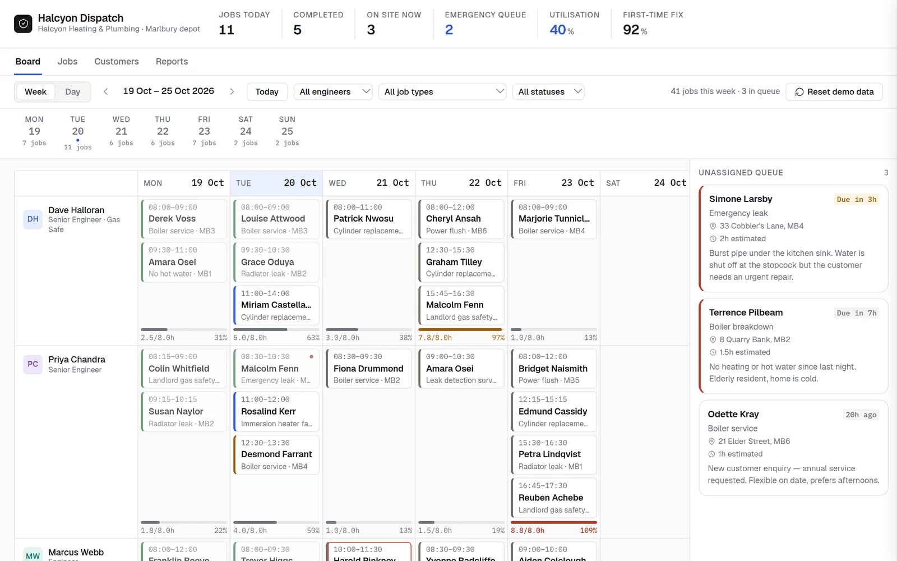
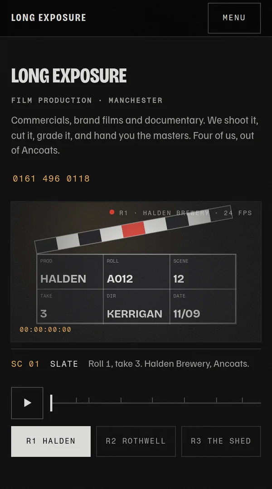
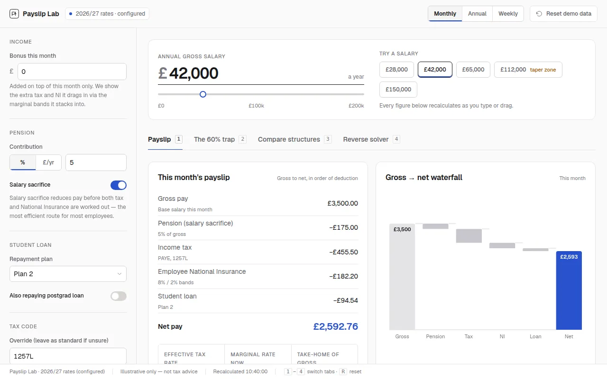
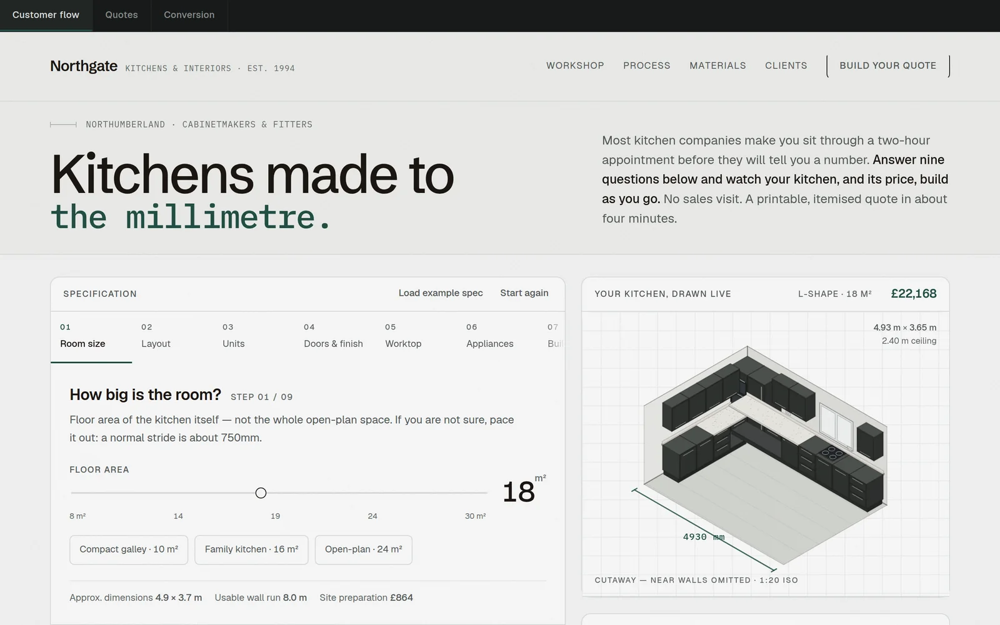
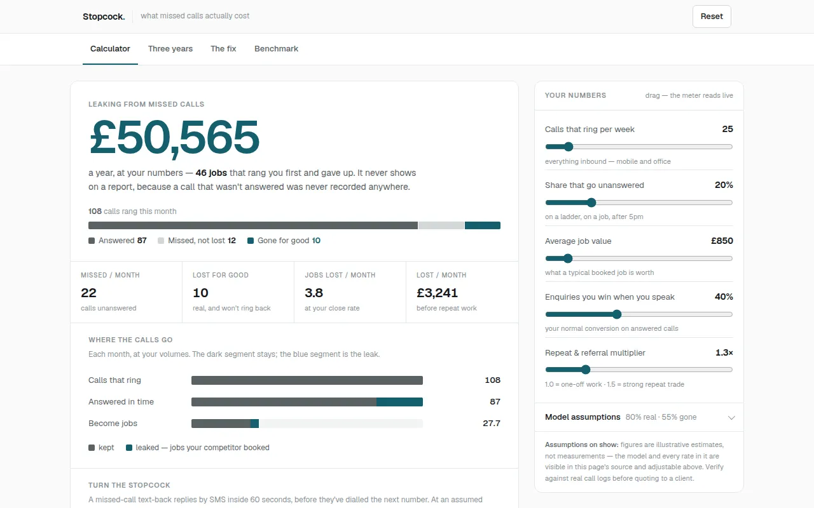
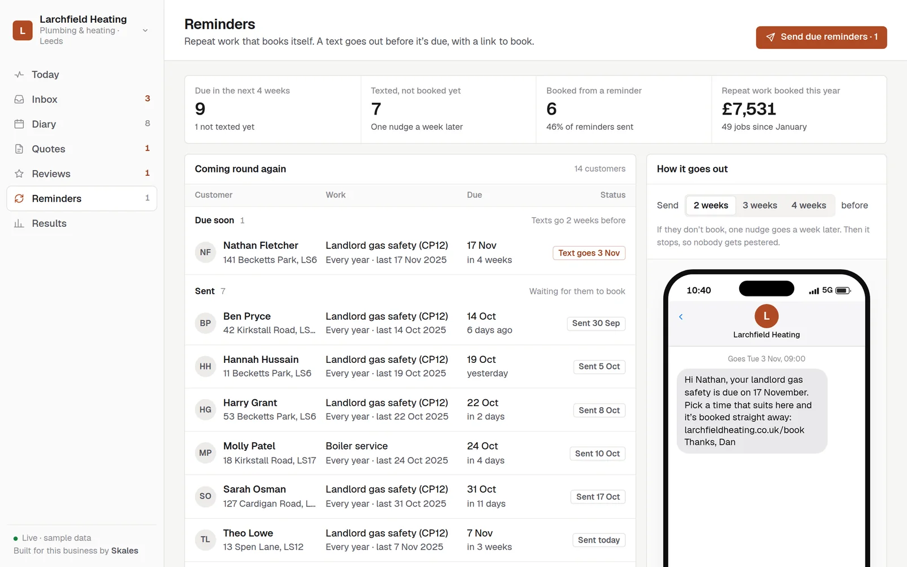
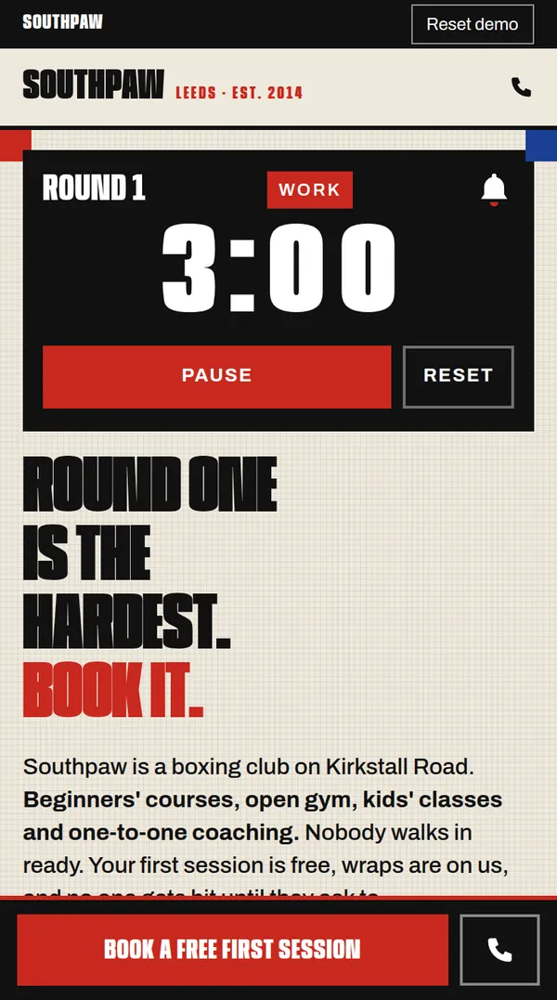

Twelve websites.
One system behind them.
Twelve full websites, each built differently for a different kind of business, and the one system that answers the phone, books the job and follows up. Every business is made up, so no client is on show. Tap any of them to use it.
The websites
A boxing club and an accountant should not get the same site. Each of these is a complete website for one kind of business, with its own look, its own pages and its own way of getting the phone to ring. They are grouped by how loud they are. How to pick yours.
Loud
Big, kinetic, confident. The type is the image and one moment does the talking.
Gyms, bars, studios, events: anyone who needs to be noticed before they are compared.Motion
The page is the film: scroll-driven sequences, letterboxes, timecodes, drawn frames.
Film, video, drone and photography businesses: anyone selling moving pictures.
MARÉE — Sel ObscurInk through water, and a page that darkens as you descend.Website · Fragrance house
Long ExposureA film company's site that plays like a film you can scrub.Website · Film production company
OverheadScroll to climb, and the valley draws itself in contours as you rise.Website · Drone survey & filmingQuiet
Plain, calm, expensive. Almost nothing moves; the typography does the work.
Accountants, clinics, architects, solicitors: businesses whose customers are buying reassurance.
Atelier VossA studio site with no photographs at all.Website · Architecture practice Hale & PartnersA year-end that settles, and the deadlines counted from today.Website · Accountant Fern PhysioA drawn body with ten tappable points, and a booking flow behind it.Website · Physiotherapy clinic
Fern PhysioA drawn body with ten tappable points, and a booking flow behind it.Website · Physiotherapy clinicDirect
Conversion first. One-tap call, a three-field form, the service area, no fluff.
Trades and local services that live off the phone. CadenceThe page is an operations board that never stops running.Website · Software company
CadenceThe page is an operations board that never stops running.Website · Software company
 Kestrel ElectricalAn electrician's page built as a fuse board: every job is a breaker.Website · Electrician
Kestrel ElectricalAn electrician's page built as a fuse board: every job is a breaker.Website · Electrician

Kerb & CamberA UK number plate you type into, and the MOT date that comes back.Website · GarageThe system
Behind every website: one app for the whole business. A missed call gets a text back in seconds, the customer books and pays a deposit, quotes chase themselves, reviews and repeat work ask for themselves, and you can see which ad booked which job. It is the real thing, not a video, so press around.

The six parts
 Inbox and missed callsEvery call, text and form in one list. Missed calls get a text back in seconds.The system · six made-up businesses
Inbox and missed callsEvery call, text and form in one list. Missed calls get a text back in seconds.The system · six made-up businesses
 Booking and the diaryCustomers book a real free time and pay a deposit. It lands in the right diary.The system · six made-up businesses
Booking and the diaryCustomers book a real free time and pay a deposit. It lands in the right diary.The system · six made-up businesses
 Quotes that chase themselvesQuotes from your price list that chase themselves until the customer answers.The system · six made-up businesses
Quotes that chase themselvesQuotes from your price list that chase themselves until the customer answers.The system · six made-up businesses
 Google reviewsEvery finished job asks for a review. Replies take one tap.The system · six made-up businesses
Google reviewsEvery finished job asks for a review. Replies take one tap.The system · six made-up businesses

Reminders that rebookYearly services, MOTs and regular cuts remind the customer and book themselves.The system · six made-up businesses
Results and adsWhere every job came from, what it was worth, and what the ads cost per job.The system · six made-up businesses